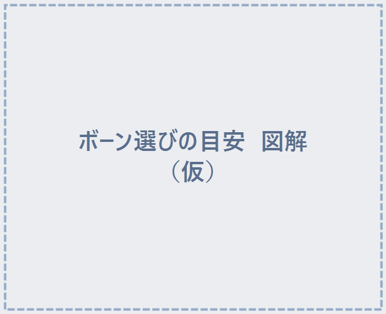

STEP 4 / 5
ボーン選びの目安
付ける場所によって、選ぶボーンの目安があります。衣装やアバターによって最適なボーンは変わるので、いくつか切り替えて試すのがコツです。

| 付けたい場所 | おすすめボーン |
|---|---|
| 胸元 | Chest または UpperChest |
| 襟・首元 | Chest または UpperChest（首元でも胸ボーンが合うことが多い） |
| 頭（ヘアピンのように） | Head |
| 鞄・装飾品など | その装飾品の Armature に付ける |
⚠️ 頭（Head）に付けるときの注意
Headボーンに付けると、自分の視点（1人称）からは見えなくなります。これはVRChatの仕様で、視界の邪魔をしないためのものです。他の人からはちゃんと見えていますので安心してください。
Headボーンに付けると、自分の視点（1人称）からは見えなくなります。これはVRChatの仕様で、視界の邪魔をしないためのものです。他の人からはちゃんと見えていますので安心してください。
💡 衣装・アバターに大きく依存します。「これだ」というボーンが一発で決まらないこともあるので、ボーンを切り替えながら一番きれいに付く場所を探してみてください。